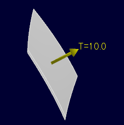
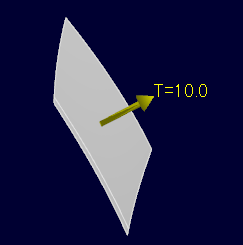

板厚設定
操作方法
板厚を設定するシートボディに、板厚方向,板厚を設定します。ＯＫボタンで確定します。板厚方向を示すシンボルが表示されます。

属性を削除する場合は通常の要素と同様、属性要素を削除します。
パラメータ
- 対象要素

板厚方向,板厚を設定します。
板厚を設定するシートボディに、板厚方向,板厚を設定します。ＯＫボタンで確定します。板厚方向を示すシンボルが表示されます。

属性を削除する場合は通常の要素と同様、属性要素を削除します。
板厚方向,板厚を設定します。